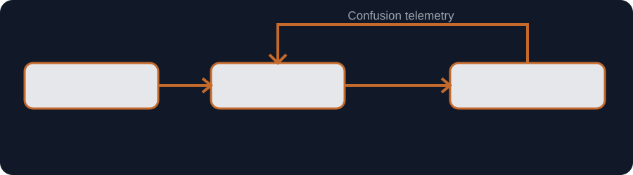

I've been drawing pictures on computers since the early 1990s. Back then it was AutoCAD: black screens, command lines, coordinates instead of a cursor. If you wanted to express an idea visually, you didn't "sketch." You constructed it — line by line — with the same kind of concentration you'd use writing a careful spec.
That early experience baked in a bias I still carry. A diagram isn't decoration. It's a claim about how reality is structured. And the first claim is almost always wrong.
Over the decades I've used every diagramming flavor I could get my hands on: house plans, network diagrams, process flows, mind maps, org charts, UML, crow's-foot schemas. Some tools were elegant, many were painful, and nearly all of them charged the same tax — the cost of translating meaning into visuals.
That tax is why people default to text, even when text is a lousy medium for structure. And that's how we ended up with the modern classics: the 47-bullet Slack message, the "quick summary" that reads like a novella, and the doc everyone bookmarks and nobody finishes. We didn't lack expertise. We lacked compression.
The compression trade
Static fallback ready{kind=link}
graph LR
A[Words] --> B[Structure]
B --> C[Understanding]
Read Mermaid source
graph LR A[Words] --> B[Structure] B --> C[Understanding]
Comprehension bandwidth is the constraint
People don't fail to read because they're lazy. They fail to read because their capacity to absorb meaning is finite, and the workday is an attention shredder.
Text is excellent for nuance and precision, but it's inefficient at showing flow. It hides forks and dead ends. It forces the reader to reconstruct a system in their head, one sentence at a time, without ever seeing the shape of it.
When structure matters, reconstruction is the expensive part. You can watch it happen in real time: someone nods through the explanation, then asks a question that proves they assembled a completely different machine in their mind. Nobody's stupid. The medium just didn't carry the structure.
A lot of diagrams are not honest. They're optimism with arrows. They erase the messy edges, exceptions, feedback loops, hidden dependencies — because the author wants to look decisive, or because the tool makes messiness feel like failure.
That's why the first diagram is usually a liar. Not malicious. Premature. It shows what we hope is true before we've paid the cost to find out what is.
ROY: Return on Your Words
I've started thinking about this as ROY — Return on Your Words.
Not how many words you wrote. Not how good they sounded. ROY is the amount of understanding produced per unit of explanation invested.
If you write 800 words and the reader still needs a meeting to understand the system, the ROY is poor. If you write 80 words that generate a picture which makes the system obvious, the ROY can be excellent — even if the picture isn't "beautiful."
The core thesis: a picture can be worth more than the words that prompted it, if it produces more understanding than prose alone.
The catch is that for most of my career, the price of producing a useful picture was high. Visio and its cousins made diagrams possible, but they also created friction: you weren't just thinking about the system — you were wrestling the canvas. Alignment, spacing, connectors, swimlanes, the weird moment when you're ten minutes deep into nudging boxes and have forgotten what you were trying to explain.
The tool didn't just cost time. It pulled you out of the mental mode required to do the work. So diagrams became "presentation artifacts" — something you created at the end, after the thinking was supposedly finished. But the thinking was never finished. That's the point.
When diagrams stopped being "drawing"
About eight months ago, ChatGPT casually generated a clean visual for a simple process I was describing. My first reaction wasn't awe. It was suspicion — the same feeling you get when something looks too tidy. Then I asked what it was: a Mermaid diagram.
Mermaid is a text-based diagramming language. You describe structure in plain language and it renders a diagram. No canvas anxiety. No toolbar archaeology. You're not arranging shapes — you're declaring relationships.
Then I discovered that tools like Microsoft Loop render Mermaid natively, and that changed the economics in a way I didn't expect. Suddenly the cost curve collapsed. Diagramming stopped feeling like a separate task and started feeling like a mode of thought — structural thinking, expressed in text.
That shift matters because it changes what the diagram is for. When the diagram is cheap to create, it can be wrong on purpose. You can draft the lie quickly, spot the lie quickly, and iterate toward something truer.
The feedback loop
Static fallback ready{kind=link}

flowchart LR
A[Words] --> B[Structure]
B --> C[Understanding]
C -->|Confusion telemetry| B
Read Mermaid source
flowchart LR A[Words] --> B[Structure] B --> C[Understanding] C -->|Confusion telemetry| B
The Council of AIs — and why it works
This is where the experiment escalated. Instead of asking one model for "the answer," I started asking several: ChatGPT, Claude, Copilot, Perplexity, Gemini, Notion. Same prompt, same goal, independent outputs. Then I pulled them back together and compared the differences.
I call it the Council of AIs — and it's less about outsourcing intelligence and more about manufacturing perspective. The value isn't that one model is correct. The value is that disagreement reveals structure.
One model will assume a clean pipeline. Another will introduce feedback loops. Another will highlight ambiguous handoffs. Another will quietly invent an actor you forgot to name. When you line those outputs up, you get a form of critique that feels a lot like a room of experienced architects — each with their own bias, each making different parts of the system visible.
One prompt to one model is the 47-bullet Slack message. A council is the diagram.
And the diagram is the scoreboard.
You can tell immediately whether the idea has shape — or whether it's still fog with confident nouns.
The council pattern (steal this)
Same brief to all models. Do not read each other. Deliver: 1) A 3-part thesis 2) A Mermaid diagram (first draft) 3) 3 failure modes — where the diagram lies Then: compare, adjudicate, synthesize.
This ties back to OverKill Hill P³™ — Precision · Protocol · Promptcraft — because it's the same discipline applied to communication: treat structure as the product, not the ornament. The words are not the deliverable. The understanding is.
If a paragraph is the best way to carry nuance, write the paragraph. If a diagram kills ambiguity faster than prose, generate the diagram. If you need both, use both — but don't pretend the reader will reconstruct a system from text just because you used complete sentences.
The field-tested conclusion I didn't expect to land on: the future isn't "more visuals." It's cheaper iteration on structure — until the output earns its space.
If the tool is heavier than the thought, the diagram is already lying.
If ROY is the metric, and diagrams are suddenly affordable again — what would you stop writing long-form explanations for, and start rendering as structure instead?
{kind=link}